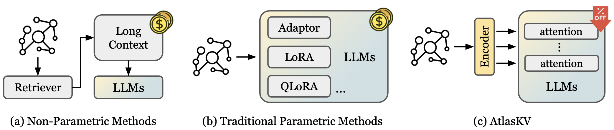
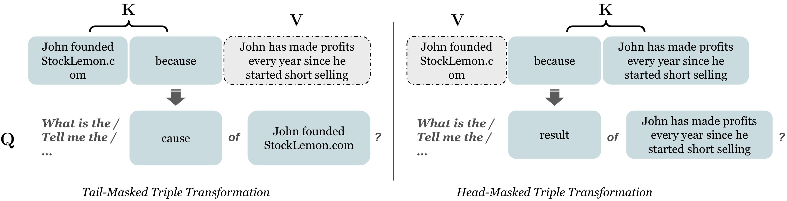
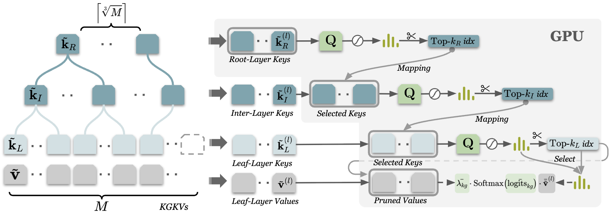
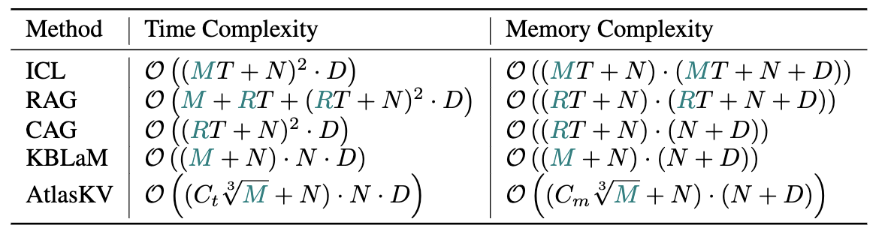
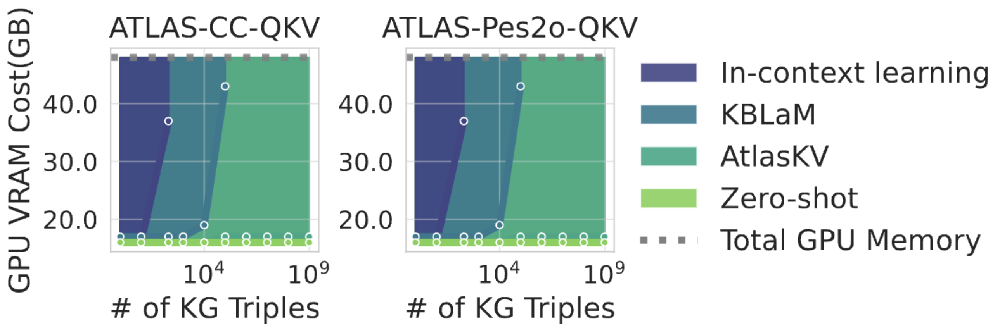
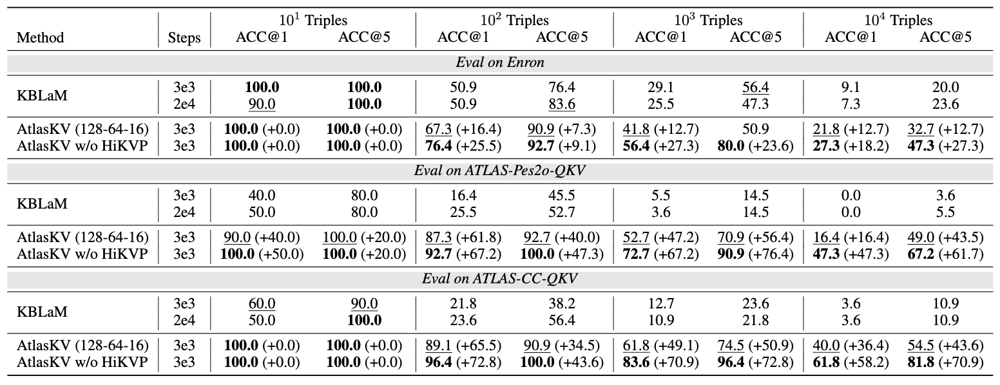
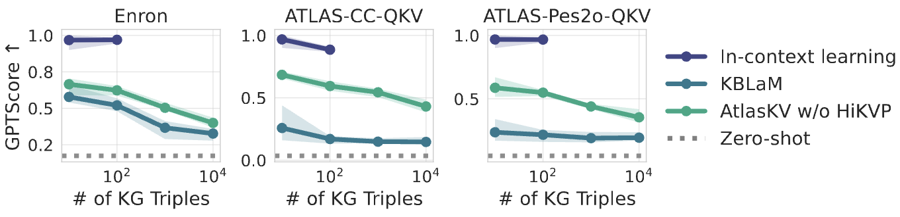
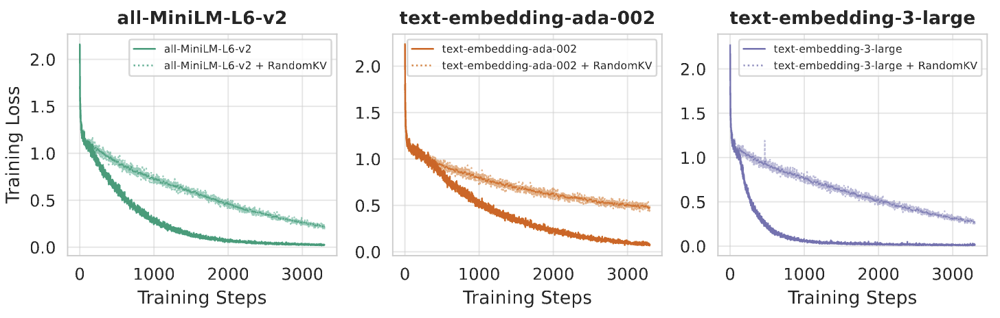

Retrieval-augmented generation (RAG) has shown some success in augmenting large language models (LLMs) with external knowledge. However, as a nonparametric knowledge integration paradigm for LLMs, RAG methods heavily rely on external retrieval modules and the retrieved textual context prior. Especially for very large scale knowledge augmentation, they would introduce substantial inference latency due to expensive searches and much longer relevant context. In this paper, we propose a parametric knowledge integration method, called AtlasKV, a scalable, effective, and general way to augment LLMs with billion-scale knowledge graphs (KGs) (e.g. 1B triples) using very little GPU memory cost (e.g. less than 20GB VRAM). In AtlasKV, we introduce KG2KV and HiKVP to integrate KG triples into LLMs at scale with sub-linear time and memory complexity. It maintains strong knowledge grounding and generalization performance using the LLMs' inherent attention mechanism, and requires no external retrievers, long context priors, or retraining when adapting to new knowledge.

Figure 1. An example of how we transform the KG triples to Q-K-V data.
Inspired by various works that achieve some success by organizing hierarchical knowledge structure on textual chunks, which is an intuitive way to organize the world's knowledge, we employ the hierarchical clustering to cluster the keys of KGKVs into a hierarchical structure. This design aims to share the computational and memory burden during inference time on each layer of the hierarchical knowledge keys.

Figure 2.An overview of hierarchical key-value pruning (HiKVP) with three layers of knowledge keys at the l-th attention layer. The gray background indicate that the part is stored and computed in the GPU memory.
During inference time, usually there are only a few relevant KG values needed for the query. And the injection of irrelevant knowledge would also introduce noise. So we use a hierarchical key-value pruning (HiKVP) pipeline as shown in Figure 2 to efficiently and scalably find the most relevant KGKVs for the query. HiKVP significantly reduces the time and memory complexity of KBLaM from linear to sub-linear, as demonstrated in Figure 3,

Figure 3. Comparison of the time and memory complexity of AtlasKV, KBLaM, RAG, CAG and ICL methods, where the parts marked in teal color represent they could be very large.
AtlasKV is more scalable with HiKVP. To verify the scalability of AtlasKV with HiKVP, we compare the GPU memory usage at inference time of AtlasKV and other methods across a wide range of KG sizes from 1 to 1B triples. As shown in Figure 4, the colored areas represent how much VRAM is saved compared with the other method. It demonstrates that with the help of HiKVP, AtlasKV can save a huge amount of VRAM compared with ICL as well as KBLaM and achieve a much lower GPU memory cost.

Figure 4. GPU memory usage comparison of AtlasKV and other methods across various KG sizes from 1 to 1B triples.
AtlasKV is more accurate and generalizable with KGKVs. Not only can AtlasKV save a huge amount of inference cost with strong scalability, but it can also maintain a higher knowledge grounding performance with strong generalization ability.

Figure 5. The knowledge grounding performance of AtlasKV against KBLaM with all-MiniLM-L6-v2 as the sentence encoder on three OOD evaluation datasets across various tuning steps and KG sizes. We defaultly set the top-k in HiKVP to 128, 64, and 16 for the kR, kI, kL respectively.
We also use GPT-4o to score the relevance between the ground truth and generated answers. As shown in Figure 6, AtlasKV achieves significantly higher GPTScores than KBLaM. Although ICL can generate a very accurate result with over 0.9 scores, it is super time-consuming to put all external knowledge into the context of LLMs.

Figure 6. Scored by GPT-4o between 0 and 1, the shaded area exhibits the standard error over 5 random seeds. The score of each random seed is also the average of 5 generation results.
We also observed dynamics in the training processes of AtlasKV, which can suggest the model regularly start learning to retrieve relevant knowledge from the external KG triples, instead of brute force over-fitting, from a specific training step.

Figure 7. The training loss curves of AtlasKV with correct and random paired key-value embeddings (KGKVs) across three different sentence encoders.
Welcome to check our paper for more details of the research work. If there is any question, please feel free to contact us.
If you find our paper and repo useful, please consider to cite:
@misc{huang2025atlaskvaugmentingllmsbillionscale,
title={AtlasKV: Augmenting LLMs with Billion-Scale Knowledge Graphs in 20GB VRAM},
author={Haoyu Huang and Hong Ting Tsang and Jiaxin Bai and Xi Peng and Gong Zhang and Yangqiu Song},
year={2025},
eprint={2510.17934},
archivePrefix={arXiv},
primaryClass={cs.CL},
url={https://arxiv.org/abs/2510.17934},
}